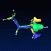
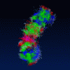

In this demo section we show some examples for visualizing dynamical data. This includes the representation of molecular metastable conformations by isosurfaces, animating a trajectory of configurations, and displaying a configuration density using direct volume rendering.
 Molecular dynamics I
Monte-Carlo trajectory of a butane molecule. The isosurfaces show three metastable conformations of the molecule. The molecular dynamics data as well as the conformation analysis was computed at the Zuse Institute Berlin (www.zib.de).Molecular dynamics II
The molecular dynamics data is courtesy of Lee Bartolotti of the North Carolina Supercomputing Center's Academic Programs Group. It was published at the VDE 2000 conference. Nucleotides with configuration density
Configuration density computed from a short trajectory of a nucleotide visualized using direct volume rendering.